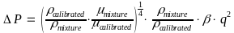

The WSEGSICD keyword defines a multi-segment well segment to be a spiral Inflow Control Device (“ICD”) as part of a completion for a multi-segment well. Note that the well must have been previously defined by the WELSPECS and WELSEGS keywords in the SCHEDULE section and that the data for the keyword should be repeated for each multi-segment completion that contains a spiral ICD.
An ICD is a well completion component usually installed along the producing section of a well to minimize the unwanted water and gas breakthrough in an oil well, or early water production in a gas well, due to an uneven flow profile over the completed interval. Permeability variations over the producing interval cause the high permeability zones to produce higher quantities of fluids than the lower permeability zones and this uneven producing fluid profile may result in bypassed hydrocarbons. Secondly, for horizontal wells, the pressure loss from the “toe” to the “heel” of the well again results in an uneven fluid profile over the producing interval. In order to rectify this ICDs can be installed so that the well fluids have to flow through an ICD before entering the tubing; thus, creating an additional “designed” pressure loss.
A spiral ICD is a type of frictional ICD that adds an additional pressure loss by directing the fluid along a “channel” (spiral/helix) before entering the tubing. The channel flow path is designed in such a manner as to create the desired pressure loss for a given ICD. By placing various ICD’s over the production interval one can design a completion that results in a more uniform producing fluid profile throughout the length of the producing interval.
No. |
Name |
Description |
Default |
||
|---|---|---|---|---|---|
Field |
Metric |
Laboratory |
|||
1 |
WELNAME |
A character string of up to eight characters in length that defines the well name for which a multi-segment well is being defined. Note that the well name (WELNAME) must have been declared previously using both the WELSPECS and WELSEGS keywords in the SCHEDULE section, otherwise an error may occur. |
None |
||
2 |
ISEG1 |
A positive integer greater than or equal to two and less than or equal to MXSEGS on the WSEGDIMS keyword in the RUNSPEC section that defines the start of a segment |
None |
||
3 |
ISEG2 |
A positive integer greater than or equal to two and not less then ISEG1 on this record and less than or equal to MXSEGS on the WSEGDIMS keyword in the RUNSPEC section, that defines the end of a segment |
None |
||
4 |
ICDSTREN |
A real positive value greater than zero that defines an empirical constant for the strength of the given ICD as determined from measurements using the calibrated fluid. |
None |
||
psia(rft3/day)2 |
barsa/(rm3/day)2 |
atma/(rcc/hr)2 |
|||
5 |
ICDLEN |
A real value that defines the length of the ICD used in conjunction with NSCALFAC to calculate a scaling factor to be applied to the reservoir flow to adjust the flow through each ICD, that is:
NSCALFAC explicitly sets which of the above three options is used. If NSCALFAC is defaulted, then option 1) is used whenever ICDLEN is positive and option 2) when ICDLEN is negative. |
Defined |
||
feet 39.37 |
m 12.00 |
cm 1,2000 |
|||
6 |
CALDEN |
CALDEN is a real positive value greater than zero that defines the density of the calibrating fluid at surface conditions. |
Defined |
||
Ib/ft3 62.416 |
kg/m3 1000.25 |
gm/cc 1.00025 |
|||
7 |
CALVISC |
CALVISC is a real positive value greater than zero that defines the viscosity of the calibrating fluid at surface conditions. |
1.45 |
||
cP |
cP |
cP |
|||
8 |
EMLCRT |
EMLCRT is a real positive value greater than zero that defines the “local water” in liquid fraction used to determine whether the “water-in-oil” or “oil-in-water” viscosity emulation equation should be applied. |
0.5 |
||
dimensionless |
dimensionless |
dimensionless |
|||
9 |
EMLTRANS |
EMLTRANS is a real positive value greater than zero that defines the width of the transition zone around EMLCRT and is used to ensure that the calculated viscosity forms a continuous function of water in liquid fraction. Within this region, the emulsion viscosity is a linear interpolation between the “water-in-oil” and “oil-in-water” viscosity values either side of the region. |
0.05 |
||
dimensionless |
dimensionless |
dimensionless |
|||
10 |
EMLMAX |
EMLMAX is a real positive value greater than zero that defines the maximum emulsion viscosity to continuous phase viscosity (oil or water) ratio. |
5.0 |
||
dimensionless |
dimensionless |
dimensionless |
|||
11 |
NSCALFAC |
NSCALFAC is a positive integer value that is greater than or equal to zero, that sets the method to be used when applying the scaling factor and should be set to one of the following:
NSCALFAC explicitly sets which of the above three options is used. If NSCALFAC is defaulted, then option 1) is used whenever ICDLEN is positive and option 2) when ICDLEN is negative. |
-1 |
||
dimensionless |
dimensionless |
dimensionless |
|||
12 |
CALRATE |
A real positive value that defines the maximum surface flow rate for which the ICD was calibrated. |
None |
||
scf/d |
sm3/day |
scc/hour |
|||
13 |
STATUS |
A defined character string of length four that defines the ICD’s operational status, STATUS should be set to one of the following character strings:
|
OPEN |
||
Notes:
|
|||||
Table 12.3.340.1: WSEGSICD Keyword Description
The total number of wells should be defined via the WELLSDIMS keyword and the number of multi-segment wells should be declared on the WSEGDIMS keyword, both keywords are in the RUNSPEC section. In addition, the WELSPECS keyword should be used to define wells, the COMPDAT keyword to define the well completions for both ordinary wells and multi-segment wells, and the COMPSEGS keyword to define a multi-segment segment completions. Finally, the WSEGSICD keyword can then be use to define ICD connections for the well. All the aforementioned keywords are described in the SCHEDULE section.
The equations used to calculate the pressure drop across the ICD are given below and illustrate how the pressure reduction is dependent on the density and viscosity of the fluid flowing through the device.
 |
(12.3.340.1) |
Where:
ΔP = the pressure drop across the device.
ρmixture = the density of the mixture, as per:
|
(12.3.340.2) |
ρcalibrated = CALDEN, the density of the calibrating fluid at surface conditions.
μcalibrated = CALVISC, the viscosity of the calibrating fluid at surface conditions.
μmixture = the viscosity of the mixture, as per:
|
(12.3.340.3) |
μemulsion = the viscosity of the oil-water emulsion at local conditions.\
β = ICDSTREN, the strength of the ICD as measured using the calibrated fluid.
q = the local flow rate through the ICD at local conditions adjusted for scaling
based on ICDLEN and NSCALFAC parameters in Table 12.3.340.1.
In equation (12.3.340.2), αi represents the volume fraction of oil, water and gas at local conditions and ρi the density of the three phases. Similarity for equation (12.3.340.3), αi represents the volume fraction of oil, water and gas at local conditions and μi the viscosity of the three phases.
See also the WSEGAICD keyword in the SCHEDULE section for autonomous ICDs, that work in a similar fashion to how sprial ICDs work.
The following example defines one producing well segment oil well (OP01) using the WELSPECS, WELSEGS COMPDAT and COMPSEGS keywords, followed by the WSEGSICD keyword to define the spiral inflow control devices for the well.
--
-- WELL SPECIFICATION DATA
--
-- WELL GROUP LOCATION BHP PHASE DRAIN INFLOW OPEN CROSS PVT
-- NAME NAME I J DEPTH FLUID AREA EQUANS SHUT FLOW TABLE
WELSPECS
OP01 PLATFORM 10 10 1* OIL /
/
--
-- WELL CONNECTION DATA
--
-- WELL --- LOCATION --- OPEN SAT CONN WELL KH SKIN D DIR
-- NAME II JJ K1 K2 SHUT TAB FACT DIA FACT FACT FACT PEN
COMPDAT
OP01 10 10 1 1 OPEN 1* 200. 0.5 /
OP01 10 10 2 2 OPEN 1* 200. 0.5 /
OP01 10 10 3 3 OPEN 1* 200. 0.4 /
OP01 10 10 4 4 OPEN 1* 200. 0.4 /
OP01 10 10 5 5 OPEN 1* 200. 0.4 /
OP01 10 10 6 6 OPEN 1* 200. 0.4 /
OP01 9 10 2 2 OPEN 1* 200. 0.4 /
OP01 8 10 2 2 OPEN 1* 200. 0.4 /
OP01 7 10 2 2 OPEN 1* 200. 0.4 /
OP01 6 10 2 2 OPEN 1* 200. 0.4 /
OP01 5 10 2 2 OPEN 1* 200. 0.4 /
OP01 10 9 3 3 OPEN 1* 200. 0.4 /
OP01 10 8 3 3 OPEN 1* 200. 0.4 /
OP01 10 7 3 3 OPEN 1* 200. 0.4 /
OP01 10 6 3 3 OPEN 1* 200. 0.4 /
OP01 10 5 3 3 OPEN 1* 200. 0.4 /
OP01 9 10 5 5 OPEN 1* 200. 0.4 /
OP01 8 10 5 5 OPEN 1* 200. 0.4 /
OP01 7 10 5 5 OPEN 1* 200. 0.4 /
OP01 6 10 5 5 OPEN 1* 200. 0.4 /
OP01 5 10 5 5 OPEN 1* 200. 0.4 /
OP01 10 9 6 6 OPEN 1* 200. 0.4 /
OP01 10 8 6 6 OPEN 1* 200. 0.4 /
OP01 10 7 6 6 OPEN 1* 200. 0.4 /
OP01 10 6 6 6 OPEN 1* 200. 0.4 /
OP01 10 5 6 6 OPEN 1* 200. 0.4 /
/
--
-- WELL SEGMENT SPECIFICATION DATA
--
-- WELL NODAL LEN WELL DEPH PRESS FLOW
-- NAME DEPTH TUBING VOLM OPTN CALC MODEL
WELSEGS
OP01 2512.5 2512.5 1.0E-5 ABS HFA HO /
--
-- SEG SEG BRAN SEG TUBING NODAL TUBE TUBE XSEC VOL
-- ISTR IEND NO NO LENGTH DEPTH ID ROUGH AREA SEG
2 2 1 1 2537.5 2534.5 0.3 0.00010 /
3 3 1 2 2562.5 2560.5 0.3 0.00010 /
4 4 1 3 2587.5 2593.5 0.3 0.00010 /
5 5 1 4 2612.5 2614.5 0.3 0.00010 /
6 6 1 5 2637.5 2635.5 0.3 0.00010 /
7 7 2 2 2737.5 2538.5 0.2 0.00010 /
8 8 2 7 2937.5 2537.5 0.2 0.00010 /
9 9 2 8 3137.5 2539.5 0.2 0.00010 /
10 10 2 9 3337.5 2535.5 0.2 0.00010 /
11 11 2 10 3537.5 2536.5 0.2 0.00010 /
12 12 3 3 2762.5 2563.5 0.2 0.00010 /
13 13 3 12 2962.5 2562.5 0.1 0.00010 /
14 14 3 13 3162.5 2562.5 0.1 0.00010 /
15 15 3 14 3362.5 2564.5 0.1 0.00010 /
16 16 3 15 3562.5 2562.5 0.1 0.00010 /
17 17 4 5 2812.5 2613.5 0.2 0.00010 /
18 18 4 17 3012.5 2612.5 0.1 0.00010 /
19 19 4 18 3212.5 2612.5 0.1 0.00010 /
20 20 4 19 3412.5 2612.5 0.1 0.00010 /
21 21 4 20 3612.5 2613.5 0.1 0.00010 /
22 22 5 6 2837.5 2634.5 0.2 0.00010 /
23 23 5 22 3037.5 2637.5 0.2 0.00010 /
24 24 5 23 3237.5 2638.5 0.2 0.00010 /
25 25 5 24 3437.5 2639.5 0.1 0.00010 /
26 26 5 25 3637.5 2639.5 0.1 0.00010 /
/
--
-- COMPLETION SEGMENT SPECIFICATION DATA
--
-- WELL
-- NAME
COMPSEGS
OP01 /
--
-- --LOCATION-- BRAN TUBING NODAL DIR LOC MID COMP ISEG
-- II JJ K1 NO LENGTH DEPTH PEN I,J,K PERFS LENGTH NO.
10 10 1 1 2512.5 2525.0 /
10 10 2 1 2525.0 2550.0 /
10 10 3 1 2550.0 2575.0 /
10 10 4 1 2575.0 2600.0 /
10 10 5 1 2600.0 2625.0 /
10 10 6 1 2625.0 2650.0 /
9 10 2 2 2637.5 2837.5 /
8 10 2 2 2837.5 3037.5 /
7 10 2 2 3037.5 3237.5 /
6 10 2 2 3237.5 3437.5 /
5 10 2 2 3437.5 3637.5 /
10 9 3 3 2662.5 2862.5 /
10 8 3 3 2862.5 3062.5 /
10 7 3 3 3062.5 3262.5 /
10 6 3 3 3262.5 3462.5 /
10 5 3 3 3462.5 3662.5 /
9 10 5 4 2712.5 2912.5 /
8 10 5 4 2912.5 3112.5 /
7 10 5 4 3112.5 3312.5 /
6 10 5 4 3312.5 3512.5 /
5 10 5 4 3512.5 3712.5 /
10 9 6 5 2737.5 2937.5 /
10 8 6 5 2937.5 3137.5 /
10 7 6 5 3137.5 3337.5 /
10 6 6 5 3337.5 3537.5 /
10 5 6 5 3537.5 3737.5 /
--
-- MULTI-SEGMENT WELL ICD SEGMENT SPECIFICATION DATA
--
-- WELL SEG SEG ICD ICD CAL CAL EML EML EML SCAL CAL OPEN
-- NAME ISTR IEND STRNEN LEN DEN VISC CRIT TRANS MAX FAC RATE CLOSE
WSEGSICD
OP01 7 10 0.00025 1* 1.0 0.45 0.50 0.05 5.0 2 1* OPEN /
OP01 12 15 0.00025 1* 1.0 0.45 0.50 0.05 5.0 2 1* OPEN /
OP01 17 20 0.00025 1* 1.0 0.45 0.50 0.05 5.0 2 1* OPEN /
OP01 22 22 0.00025 1* 1.0 0.45 0.50 0.05 5.0 2 1* OPEN /
OP01 23 23 0.00025 1* 1.0 0.45 0.50 0.05 5.0 2 1* OPEN /
OP01 24 24 0.00025 1* 1.0 0.45 0.50 0.05 5.0 2 1* OPEN /
OP01 25 25 0.00050 10.0 1.0 0.45 0.50 0.05 5.0 2 1* OPEN /
/
Branch number two uses one ICD for segments seven to ten, branch number three again uses only one ICD for segments 12 to 15 and similarly branch number three uses one ICD. The fifth and final branch has a total of four ICDs with the last interval having a 10 foot length. Since NSCALFAC equals two for the ICDs, then the scale factor is equal to the length of ICDLEN, divided by the total length of the completions which supply the ICD. Where ICDLEN is defaulted, the default value of 39.37 ft will be used for field units and 12 m for SI units.